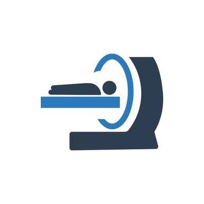

our services
OpthamlogyTreatment
Ophthamology treatment is crucial for preserving vision and addressing eye-related issues, offering interventions like surgeries, medications, and corrective lenses to enhance visual health and quality of life for patients.

radiology treatments
Radiology is critical for diagnosing diseases, injuries, and conditions through imaging techniques like X-rays, CT scans, and MRIs, guiding accurate treatment plans and interventions for patients across various medical specialties.

cardiology Treatment
cardiology treatments are crucial for preserving and improving heart health, saving lives, enhancing quality of life, and advancing medical knowledge to better combat heart-related ailments.
HOW WE WORK
** We work with new technologies and specalist doctors**
Our treatment technologies
Ent treatments
The technologies used in ENT treatments.
* Ear microscope
* Audiologies testing
Opthamology Treatment
The technologies used in opthamologies treatments
* An optical coherence tomography scan
* 3D imaging
* virtual reality and artifical intelligence for data analysisy
Radiology treatment
Technologies used in Radiology treatments
* MRI
* Ultrasound
* X-Ray
cardiology treatment
The technologies used in cardiology treatments
* Electrotherapy
* Joint moboilization
Our Team
Dr.Bharath
postgraduate degree in Ophthalmology
Dr.Saikiran
MS (Master of Surgery) in cardiology
Dr.Kalpana
Master of Surgery (MS) in ENT
Dr.Shahid
MS in Radiology
What Our Patients Say
"The care I received at Hyderabad Health Center was exceptional. The doctors and staff are highly skilled and compassionate. I'm grateful for their dedication to patient well-being."
- John Doe, Patient"The ENT treatment I received here was top-notch. Dr. Kalpana's expertise and the use of advanced technologies made my recovery quick and efficient."
- Jane Smith, Patient